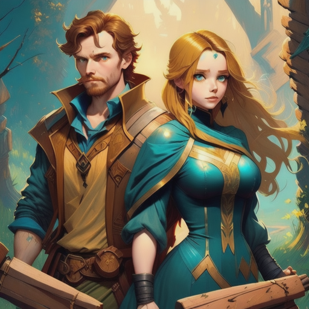

Sara's relationship with Jack deepened as they embarked on adventures together, delving further into the mysteries of the ancient artifacts and the secret organization he was part of.
They uncovered hidden truths, faced dangerous adversaries, and forged an unbreakable bond. Each day was a thrilling and perilous journey into the unknown.
Sophie, concerned for her friend's safety, couldn't help but worry. She tried to research more about the secret organization and the artifacts to understand the risks involved.
As the days turned into weeks, Sara and Jack faced a critical decision.
Should they continue their dangerous quest for knowledge and protection of the artifacts, or should they step back and seek a safer path?
The Reconnection
Continue the mission to protect the artifacts
Choose safetty and step away from the perilous path.